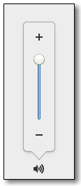

Gtk.VolumeButton¶
Example¶

- Subclasses:
None
Methods¶
- Inherited:
Gtk.ScaleButton (9), Gtk.Button (29), Gtk.Bin (1), Gtk.Container (35), Gtk.Widget (278), GObject.Object (37), Gtk.Buildable (10), Gtk.Actionable (5), Gtk.Activatable (6), Gtk.Orientable (2)
- Structs:
Gtk.ContainerClass (5), Gtk.WidgetClass (12), GObject.ObjectClass (5)
class |
|
Virtual Methods¶
Properties¶
- Inherited:
Gtk.ScaleButton (4), Gtk.Button (9), Gtk.Container (3), Gtk.Widget (39), Gtk.Actionable (2), Gtk.Activatable (2), Gtk.Orientable (1)
Name |
Type |
Flags |
Short Description |
|---|---|---|---|
r/w/c/en |
Whether to use symbolic icons |
Style Properties¶
- Inherited:
Signals¶
Fields¶
- Inherited:
Gtk.ScaleButton (3), Gtk.Button (6), Gtk.Container (4), Gtk.Widget (69), GObject.Object (1)
Name |
Type |
Access |
Description |
|---|---|---|---|
parent |
r |
Class Details¶
- class Gtk.VolumeButton(*args, **kwargs)¶
- Bases:
- Abstract:
No
- Structure:
Gtk.VolumeButtonis a subclass ofGtk.ScaleButtonthat has been tailored for use as a volume control widget with suitable icons, tooltips and accessible labels.- classmethod new()[source]¶
- Returns:
a new
Gtk.VolumeButton- Return type:
Creates a
Gtk.VolumeButton, with a range between 0.0 and 1.0, with a stepping of 0.02. Volume values can be obtained and modified using the functions fromGtk.ScaleButton.New in version 2.12.
Property Details¶
- Gtk.VolumeButton.props.use_symbolic¶
- Name:
use-symbolic- Type:
- Default Value:
- Flags:
Whether to use symbolic icons as the icons. Note that if the symbolic icons are not available in your installed theme, then the normal (potentially colorful) icons will be used.
New in version 3.0.